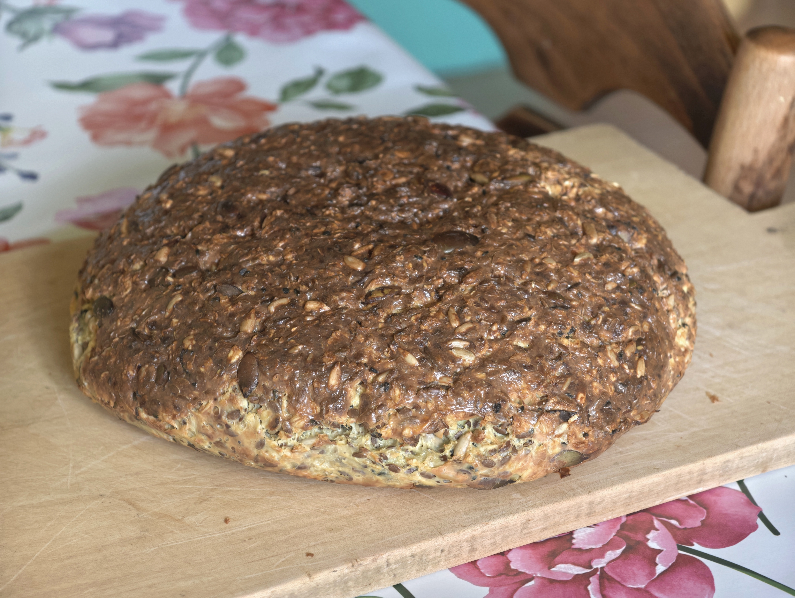

High protein bread

Description
This recipe offers a fantastic high-protein, flourless bread that
you can make effortlessly using an air fryer. It's the perfect solution for anyone looking
for a healthy and satisfying alternative to traditional bread.
Whether you need a quick breakfast, a post-workout snack, or a simple
side for your dinner, this bread is incredibly versatile and easy to prepare.
Ingridients
- 5 eggs
- 500g of full-fat cottage cheese
- A tablespoon of salt
- 2 tablespoons of nigella seeds
- A cup of rolled oats
- Half a cup of pumpkin seeds
- Half a cup of sunflower seeds
- Half a cup of flax seeds
Steps
- In a bowl, mash the cottage cheese with a spoon and add the rest of the ingredients.
- Mix everything until the ingredients are combined.
- Place it in the air fryer for 50 minutes at 170 degrees Celsius.
- Then, flip the bread over and bake for another few minutes until the bottom is browned.
- Take it out to cool down.
Homepage